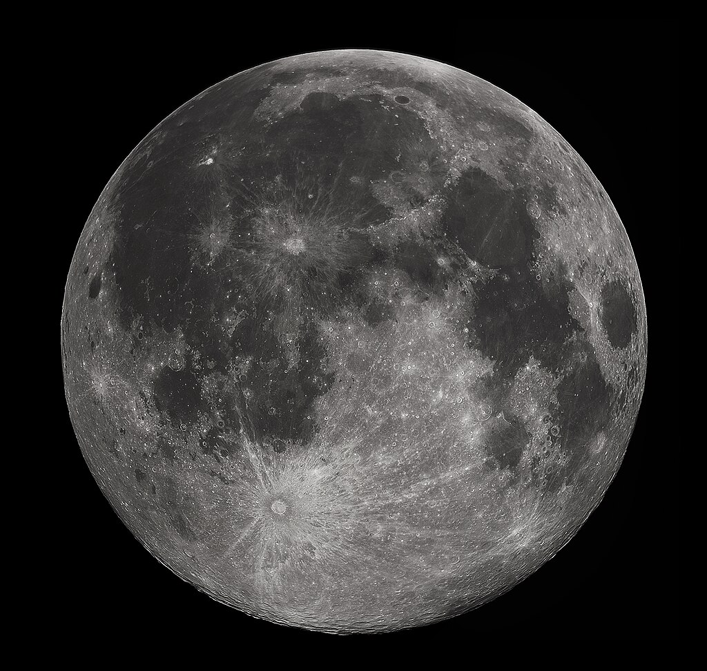

Galeri Objek Alam Semesta
Jelajahi keindahan dan keajaiban tata surya kita
Merkurius
Planet terdekat dari Matahari dan terkecil dalam tata surya.
Venus
Planet terpanas dengan atmosfer sangat tebal yang memicu efek rumah kaca.

Bumi
Satu-satunya planet yang diketahui mendukung kehidupan dan tempat tinggal manusia.

Bulan
Satelit alami Bumi yang berperan penting dalam pasang surut air laut.
Mars
Mars yang disebut Planet Merah, target utama eksplorasi antariksa.
Jupiter
Planet terbesar yang ikonik dengan Bintik Merah Besar.

Saturnus
Terkenal dengan sistem cincin yang sangat indah.
Uranus
Planet yang unik karena rotasinya miring hampir horizontal.
Neptunus
Planet biru dengan angin tercepat di tata surya.
Pluto
Dulu planet kesembilan, kini diklasifikasikan sebagai planet kerdil.
Asteroid
Bebatuan luar angkasa yang bentuknya abstrak dan mengorbit matahari, kebanyakan berada di sabuk asteroid.
Komet
Objek es yang menghasilkan ekor saat mendekati Matahari.

Galaksi Bima Sakti
Galaksi tempat Tata surya kita berada.

Lubang Hitam
Objek luar angkasa dengan gravitasi ekstrem yang bahkan cahaya tidak bisa lepas.
Quasar
Sumber energi sangat terang dari pusat galaksi aktif yang diduga mengandung lubang hitam supermasif.

"Terima kasih telah mengunjungi dan memainkan game Tebak Objek Alam Semesta!" Kami sangat menghargai waktu dan antusiasme kamu. Semoga pengalaman bermainmu menyenangkan dan menambah pengetahuan tentang keajaiban alam semesta!.